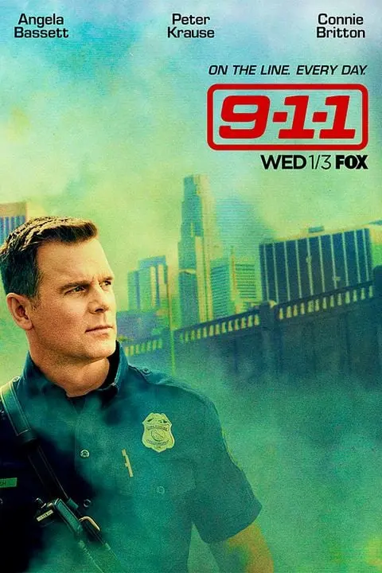
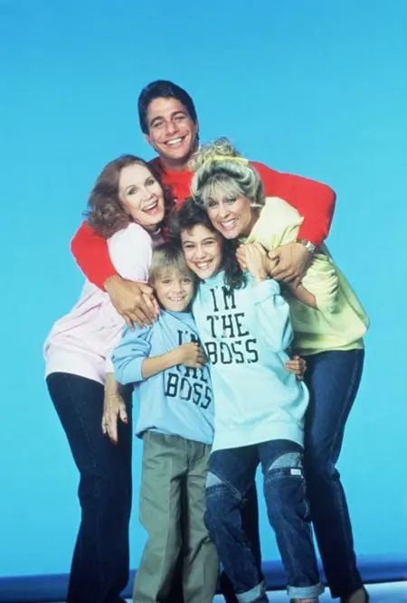
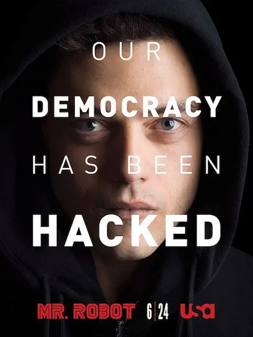
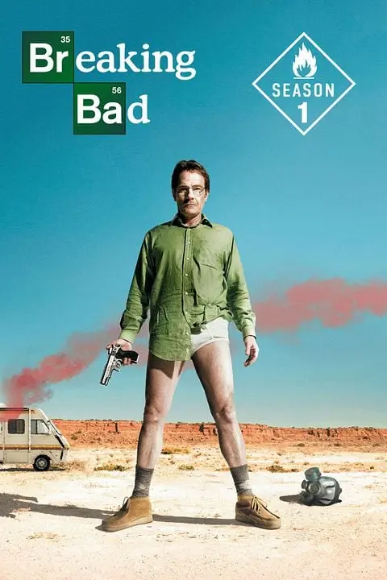
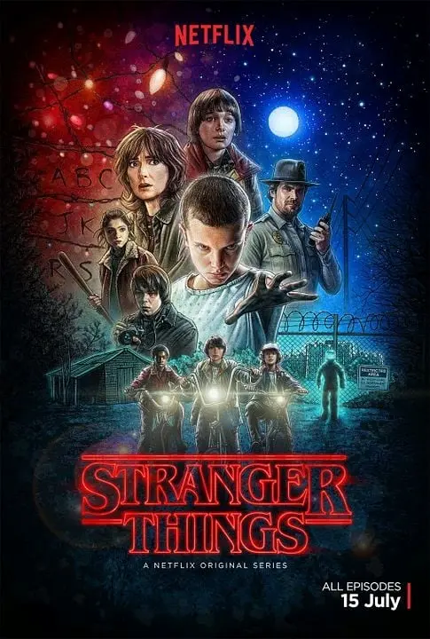
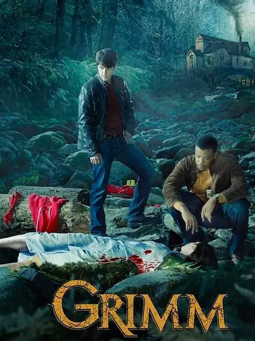
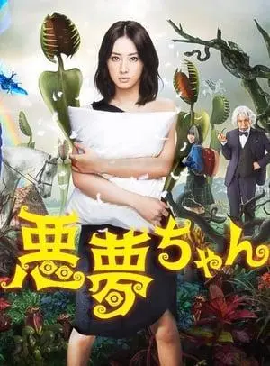
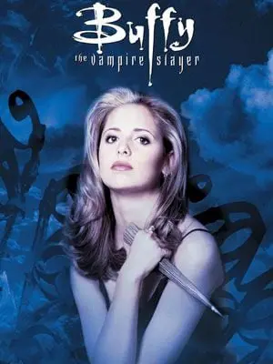
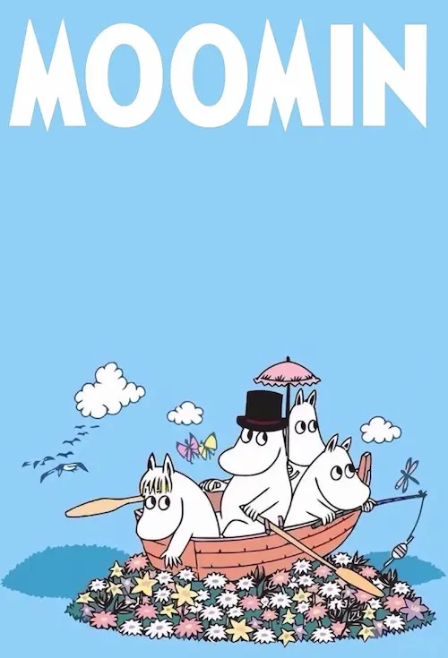
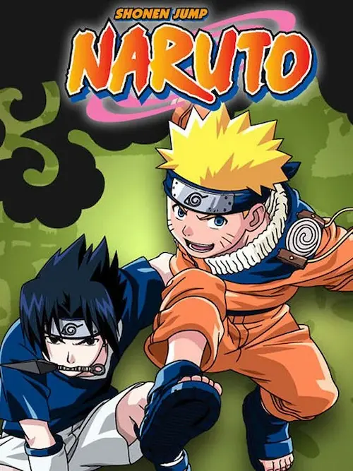

💖 Mes séries préférées
En ajoutant mon dernier article sur les séries, j’ai réalisé que je n’avais pas encore fait de top 10 de mes séries préférées. C’est un travail difficile 😵💫.
D’abord, j’ai vu des tas et des tas de séries, depuis des années ! Et puis il y a toujours quelque chose de plaisant, quand on regarde une série dans son intégralité, alors choisir les meilleures, c’est un peu comme choisir une pâtisserie parmi toutes celles que l’on préfère déjà ! Mais bon, je me prête à l’exercice 🤪.
J’ai d’abord établi une liste des toutes les séries que j’ai pu voir, aussi loin que je me souvienne. Donc ça passe par la Trilogie du samedi, sur M6, aux séries qui passaient sur TF1 à la sortie de l’école, ou encore aux dessins animés et autres découvertes japonaises du net. J’ai réuni 61 noms, et je suis sûre d’en avoir oublié !
Aller, voyons quelles sont les 10 meilleures selon moi… 💖
10. 9.1.1., 2018
Série créée par Ryan Murphy et diffusée depuis 2018, toujours en cours.
Résumé

Les pompiers de l’équipe 118 de Los Angeles interviennent partout en ville pour sauver des vies, toujours en lien étroit avec les opérateurs du 911 et la police.
Mon avis
Excellente série, palpitante, avec des personnages géniaux et des intrigues toujours très émouvantes.
J’avoue que la fin de la saison 8 m’a beaucoup émue et m’a incitée à arrêter de regarder. Mais je me dis quand-même : « pourquoi pas ? ».
Les personnages sont vraiment top et on a envie de les voir avancer ensemble. Même si les catastrophes sont toujours plus rocambolesques les unes que les autres 😏.
9. Madame est servie, 1984
Créée en 1984 par Martin Cohan, avec le fabuleux Tony Danza !
Résumé

Tony Micelli prend un poste d’homme à tout faire chez Angela Bower, une femme d’affaires divorcée. Il s’installe chez elle, son fils et sa mère, avec sa fille Samantha. Bientôt, les relations vont dépasser le cadre professionnel.
Mon avis
J’ai toujours adoré cette série, même en la revoyant des années plus tard. Il y a beaucoup d’humour, les épisodes sont courts et dynamiques, les personnages attachants.
Si j’y réfléchis bien, Notre belle famille, Malcolm, Une nounou d’enfer ou The Big Bang theory pourraient aussi occuper cette place. C’est la place de la série marrante, sans prise de tête. Mais Tony et Angela sont hyper mignons !
8. Mr. Robot, 2015
Créée par Sam Eismel en 2015.
Résumé

Elliot travaille dans la cyber sécurité, mais il est aussi hacker. Il est abordé par un certain Mr. Robot pour faire tomber une puissante multinationale.
Mon avis
Cette série aborde des thèmes profonds de manière assurée et esthétique. Tout y est : les inégalités, la main-mise des milliardaires sur le monde, la folie, les traumatismes liés à la maltraitance des enfants, la cyber sécurité, le crime organisé, etc.
Les personnages sont supers, le déroulement et le dénouement de l’intrigue époustouflants et la conclusion nette. J’ai adoré. Tout simplement. À revoir, à coup sûr !
7. Breaking Bad, 2008
Créée par Bryan Cranston en 2008.
Résumé

Walter White est professeur de chimie et mourant d’un cancer. Pour subvenir aux besoins de sa famille, il utilise ses connaissances pour fabriquer du crystal meth avec l’aide d’un ancien élève, Jesse, qui trempe désormais dans le deal de drogue.
Mon avis
Cette série est à la fois comique et tragique. Elle est si bien faite qu’on ressent totalement le désarroi et le désespoir de Walter, du début à la fin.
Les événements sont tous plus inattendus les uns que les autres. À revoir aussi, donc je n’en dis pas plus !
6. Stranger Things, 2016
Créée par les frères Duffer en 2016.
Résumé

Une bande de copains se plonge dans les secrets sombres et surnaturels de leur ville quand leur ami disparaît mystérieusement.
Mon avis
J’ai reparlé de Stranger Things il n’y a pas si longtemps que cela, quand la dernière saison est sortie.
Au premier visionnage, l’attente entre les saisons gâchait totalement l’immersion et le plaisir. En revoyant tout d’une traite pour découvrir la fin, c’était exceptionnel. L’univers et les personnages sont tellement bien pensés. L’humour me parle totalement et, même si Vekna est hyper chiant, et que la résolution finale est un peu chelou quand-même, j’ai adoré la bravoure, l’altruisme et le courage de chacun des héros.
5. Grimm, 2011
Créée par David Giuntoli en 2011.
Résumé

Nick découvre qu’il est un Grimm, il est capable de voir les créatures fantastiques qui se cachent sous une apparence humaine et il a pour mission de les éliminer. Seulement, il a d’autres idées et il préfère utiliser ses connaissances et ses amitiés nouvelles pour résoudre des crimes.
Mon avis
Là, on est pile dans la série fantastique des années 2000, 2010 de type Charmed, Smallville, Roswell, Buffy, etc. C’est mon truc !
L’ambiance est super cool, l’humour génial et le lore autour des créatures vachement bien pensé. Nick et son ami wessen sont marrants comme tout et les enquêtes, au fur et à mesure des épisodes, permettent d’en apprendre toujours plus. J’adore.
4. Akumu chan, 2012
Série japonaise créée par Sumio Omori en 2012.
Résumé

Une jeune professeure qui ne croit plus en l’amour se retrouve obligée d’aider une enfant qui fait des rêves prémonitoires.
Mon avis
J’adore le concept, le style et l’humour. Je l’ai vu en version originale sous-titrée, c’est encore plus cool.
Les personnages sont marrants, l’intrigue prenante et il y a Gackt ! À revoir ❤️.
3. Buffy contre les vampires, 1997
Créée par Joss Whedon en 1997.
Résumé

Buffy Summers est l’élue. Elle est la tueuse. Sa mission est de protéger le monde des créatures malfaisantes de l’enfer. Gilles, le bibliothécaire du lycée, va la guider et elle peut compter sur ses amis.
Mon avis
Cette série s’améliore de saison en saison, ce qui est très rarement le cas. C’est même souvent l’inverse, en fait.
L’univers est top, la tueuse est classe, les vampires sont à la fois effrayants et marrants, Spike en jette, les musiques déchirent. Bref, tout est cool.
L’histoire peut parfois être un peu tordue, mais comme c’est une fille dotée de pouvoirs légendaires qui doit tuer des monstres, ça passe 😁.
2. Les Moomins, 1990
Créée à partir des personnages de Tove Jansson.
Résumé

Moomin et ses amis vivent des jours paisibles dans la vallée des Moomins.
Mon avis
J’en ai aussi parlé il n’y a pas si longtemps. Cette série est tout bonnement magique. Quand on entre dans la vallée des Moomins, on aimerait ne jamais en sortir.
Cette série animée japonaise est particulièrement douce. Les personnages y sont dépeints sous leur meilleur jour et le doublage français m’a beaucoup amusée.
1. Naruto et Naruto Shippuden, 2002
Adaptée du manga de Masashi Kishimoto.
Résumé

Naruto souhaite devenir le plus grand shinobi de tous les temps et prouver au monde entier sa valeur. Durant son apprentissage de ninja, il découvre les intrigues politiques qui régissent les différents pays et est confronté à la haine et à la disparition de ses camarades.
Mon avis
Je ne place pas Naruto en première place à la légère. Cette série est extraordinaire. Elle allie à la perfection humour, émotion, réflexion, esprit critique, amour. Je suis passée par tous les spectres des émotions avec elle !
J’adore les personnages, l’histoire, les moments clés et les leçons de vie distillées ça et là.
Les musiques sont aussi magnifiques.
Je reverrai Naruto, à coup sûr, même si ça prend de centaines d’heures de la regarder…
Voilà pour ce top 10. Évidemment, il y a bien d’autres séries que j’ai adorées. Et il y en aura de nouvelles ! Mais quand il faut choisir… 🤓